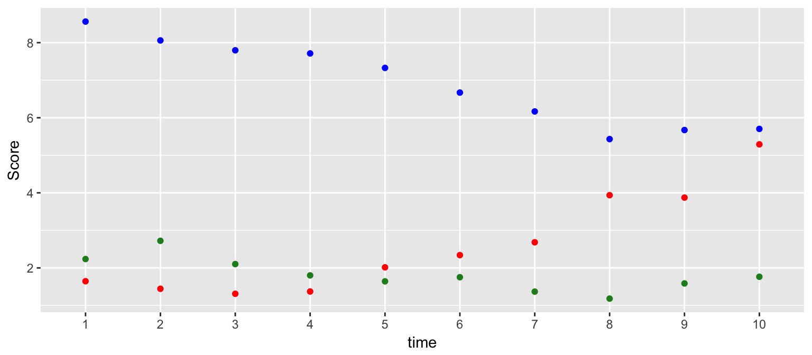

Your Turn (10 min)

Try to answer (a part of) the question: are different ratings similar?
Note: there are many different ways of answering this question. Choose one numeric and one visual approach
Heike Hofmann
%>%f(x) %>% g(y) is equivalent to g(f(x), y)
i.e. the output of one function is used as input to the next function. This function can be the identity
Consequences:
x %>% f(y) is the same as f(x, y)k(h(g(f(x, y), z), u), v, w) become x %>% f(y) %>% g(z) %>% h(u) %>% k(v, w)%>% as “then do”dplyr packageThere are five primary dplyr verbs, representing distinct data analysis tasks:
library(tidyverse)
data(french_fries, package = "reshape2")
french_fries %>%
filter(subject == 3, time == 1)## time treatment subject rep potato buttery grassy rancid painty
## 1 1 1 3 1 2.9 0.0 0.0 0.0 5.5
## 2 1 1 3 2 14.0 0.0 0.0 1.1 0.0
## 3 1 2 3 1 13.9 0.0 0.0 3.9 0.0
## 4 1 2 3 2 13.4 0.1 0.0 1.5 0.0
## 5 1 3 3 1 14.1 0.0 0.0 1.1 0.0
## 6 1 3 3 2 9.5 0.0 0.6 2.8 0.0Look at ?reshape2::french_fries to learn more about the data
filter is similar to the base function subset
Multiple conditions in filter are combined with a logical AND (i.e. all conditions must be fulfilled)
Logical expressions can be used e.g. filter(subject == 3 & time == 1)
french_fries %>%
arrange(desc(rancid), potato) %>%
head## time treatment subject rep potato buttery grassy rancid painty
## 1 9 2 51 1 7.3 2.3 0 14.9 0.1
## 2 10 1 86 2 0.7 0.0 0 14.3 13.1
## 3 5 2 63 1 4.4 0.0 0 13.8 0.6
## 4 9 2 63 1 1.8 0.0 0 13.7 12.3
## 5 5 2 19 2 5.5 4.7 0 13.4 4.6
## 6 9 1 63 1 1.7 0.0 0 13.3 12.8Successive variables are used for breaking ties from previous variables.
french_fries %>%
select(time, treatment, subject, rep, potato) %>%
head## time treatment subject rep potato
## 61 1 1 3 1 2.9
## 25 1 1 3 2 14.0
## 62 1 1 10 1 11.0
## 26 1 1 10 2 9.9
## 63 1 1 15 1 1.2
## 27 1 1 15 2 8.8french_fries %>%
summarise(mean_rancid = mean(rancid, na.rm=TRUE),
sd_rancid = sd(rancid, na.rm = TRUE))## mean_rancid sd_rancid
## 1 3.85223 3.781815french_fries %>%
group_by(time, treatment) %>%
summarise(mean_rancid = mean(rancid), sd_rancid = sd(rancid))## Source: local data frame [30 x 4]
## Groups: time [?]
##
## time treatment mean_rancid sd_rancid
## <fctr> <fctr> <dbl> <dbl>
## 1 1 1 2.758333 3.212870
## 2 1 2 1.716667 2.714801
## 3 1 3 2.600000 3.202037
## 4 2 1 3.900000 4.374730
## 5 2 2 2.141667 3.117540
## 6 2 3 2.495833 3.378767
## 7 3 1 4.650000 3.933358
## 8 3 2 2.895833 3.773532
## 9 3 3 3.600000 3.592867
## 10 4 1 2.079167 2.394737
## # ... with 20 more rowsChange an existing or create a new variable into the data
french_fries %>%
mutate(
awful = (buttery+potato)/2 - (grassy+painty+rancid)/3
) %>% glimpse()## Observations: 696
## Variables: 10
## $ time <fctr> 1, 1, 1, 1, 1, 1, 1, 1, 1, 1, 1, 1, 1, 1, 1, 1, 1, ...
## $ treatment <fctr> 1, 1, 1, 1, 1, 1, 1, 1, 1, 1, 1, 1, 1, 1, 1, 1, 1, ...
## $ subject <fctr> 3, 3, 10, 10, 15, 15, 16, 16, 19, 19, 31, 31, 51, 5...
## $ rep <dbl> 1, 2, 1, 2, 1, 2, 1, 2, 1, 2, 1, 2, 1, 2, 1, 2, 1, 2...
## $ potato <dbl> 2.9, 14.0, 11.0, 9.9, 1.2, 8.8, 9.0, 8.2, 7.0, 13.0,...
## $ buttery <dbl> 0.0, 0.0, 6.4, 5.9, 0.1, 3.0, 2.6, 4.4, 3.2, 0.0, 0....
## $ grassy <dbl> 0.0, 0.0, 0.0, 2.9, 0.0, 3.6, 0.4, 0.3, 0.0, 3.1, 0....
## $ rancid <dbl> 0.0, 1.1, 0.0, 2.2, 1.1, 1.5, 0.1, 1.4, 4.9, 4.3, 2....
## $ painty <dbl> 5.5, 0.0, 0.0, 0.0, 5.1, 2.3, 0.2, 4.0, 3.2, 10.3, 2...
## $ awful <dbl> -0.3833333, 6.6333333, 8.7000000, 6.2000000, -1.4166...Why does
french_fries$awful## NULLnot return a real-valued summary?
french_fries datamutate or summarize?Both commands introduce new variables - so which one should we use?
Differences:
mutate adds variables to the existing data set: the resulting variables must have the same length as the original data, e.g. use for transformations, combinations of multiple variablessummarize creates aggregates of the original data. The number of rows of the new dataset is determined by the number of combinations of the grouping structure. The number of columns is determined by the number of grouping variables and the summary statistics.to answer these french fry experiment questions:
If the data is complete it should be 12 (subjects) x 10 (weeks) x 3 (treatments) x 2 (replicates), that is, 6 records for each person in each week. (Assuming that each person rated on all scales.)
To check this, we want to tabulate the number of records for each subject, time and treatment. This means select appropriate columns, tabulate, count and spread it out to give a nice table.
french_fries %>%
ggplot(aes(x = time)) + geom_bar() + facet_wrap(~subject) dim(french_fries) # too few rows - should be 720 = 12 x 10 x 6## [1] 696 9# if subjects come, they give all six evaluations
french_fries %>% group_by(time, subject) %>% summarize(n = n()) %>% summary()## time subject n
## 1 :12 10 :10 Min. :6
## 2 :12 15 :10 1st Qu.:6
## 3 :12 16 :10 Median :6
## 4 :12 19 :10 Mean :6
## 5 :12 51 :10 3rd Qu.:6
## 6 :12 52 :10 Max. :6
## (Other):44 (Other):56Why are all of the ns equal to 6?
# not all subjects come all the time:
french_fries %>% group_by(subject) %>% summarize(n = n()) %>% arrange(n)## # A tibble: 12 × 2
## subject n
## <fctr> <int>
## 1 3 54
## 2 31 54
## 3 79 54
## 4 86 54
## 5 10 60
## 6 15 60
## 7 16 60
## 8 19 60
## 9 51 60
## 10 52 60
## 11 63 60
## 12 78 60summarize(n = n()) is equivalent to tally()group_by(week, subject) %>% summarize(n = n()) is equivalent to count(week, subject)reps <- french_fries %>% group_by(time, subject, treatment) %>%
summarise(
potato_diff = diff(potato),
potato = mean(potato)
)
reps## Source: local data frame [348 x 5]
## Groups: time, subject [?]
##
## time subject treatment potato_diff potato
## <fctr> <fctr> <fctr> <dbl> <dbl>
## 1 1 3 1 11.1 8.45
## 2 1 3 2 -0.5 13.65
## 3 1 3 3 -4.6 11.80
## 4 1 10 1 -1.1 10.45
## 5 1 10 2 1.7 10.15
## 6 1 10 3 -1.2 10.70
## 7 1 15 1 7.6 5.00
## 8 1 15 2 -2.0 8.00
## 9 1 15 3 2.2 6.90
## 10 1 16 1 -0.8 8.60
## # ... with 338 more rowsreps %>%
ggplot(aes(x = potato, y = potato_diff, colour = as.numeric(time))) +
facet_wrap(~subject) +
geom_hline(aes(yintercept=0)) +
geom_point()
Try to answer (a part of) the question: are different ratings similar?
Note: there are many different ways of answering this question. Choose one numeric and one visual approach
french_fries %>%
ggplot(aes(x = potato, y = buttery)) + geom_point() +
theme(aspect.ratio=1) + xlim(c(0,15)) + ylim(c(0,15)) +
geom_abline(colour = "grey50")The package GGally has an implementation of a scatterplot matrix using ggplot2:
GGally::ggpairs(data = french_fries[ ,5:9])For the numeric approach of a summary we could compute means across subjects for each week and compare those values:
ffm <- french_fries %>% group_by(time) %>% summarise(
potato = mean(potato, na.rm=TRUE),
buttery = mean(buttery, na.rm=TRUE),
painty = mean(painty, na.rm=TRUE)
)ffm %>%
ggplot(aes(x = time, y = potato)) + geom_point(colour = "blue") +
geom_point(aes(y = buttery), colour = "forestgreen") +
geom_point(aes(y = painty), colour = "red") +
ylab("Score")
This doesn’t look like the most elegant or most efficient way of answering the question: the data is in an awkward form!
The dataset ChickWeight is part of the core packages that come with R (i.e. data(ChickWeight) gets the data into your active session). From the help file:
There were four groups of chicks on different protein diets. The body weights of the chicks were measured at birth and every second day thereafter until day 20. They were also measured on day 21.


gain into the data that keeps track how much weight each chick has gained since Time 0 (i.e. gain at time 0 should be 0). Plot weight gain over time. Connect the observed weight gain for each chick by a line. Facet by diet.?geom_errorbar)dplyr actions takes a bit of time and practicedplyr functionsdplyr functions in your regular workflow: that means you have to do things differently - the long-term benefits are there, promise!tidyr